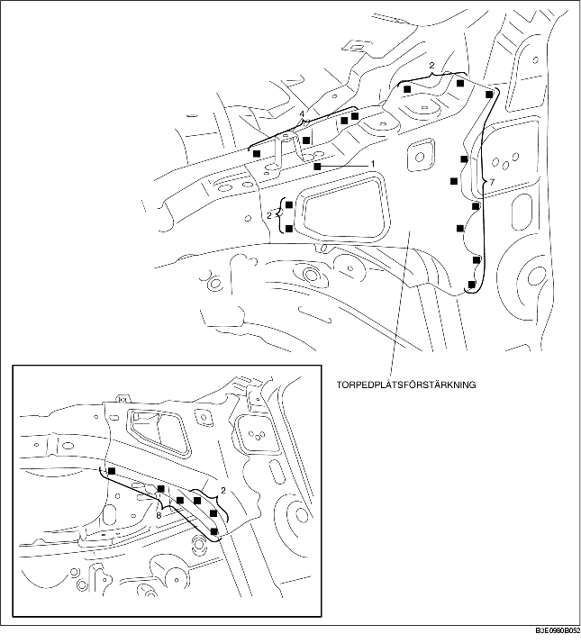

1. Vid montering av nya delar, mät och justera karossen vid behov så att den stämmer enligt ritningen.
2. Borra hål för pluggsvetsning innan de nya delarna monteras.
3. Montera de nya delarna tillfälligt för att säkerställa att de passar.
